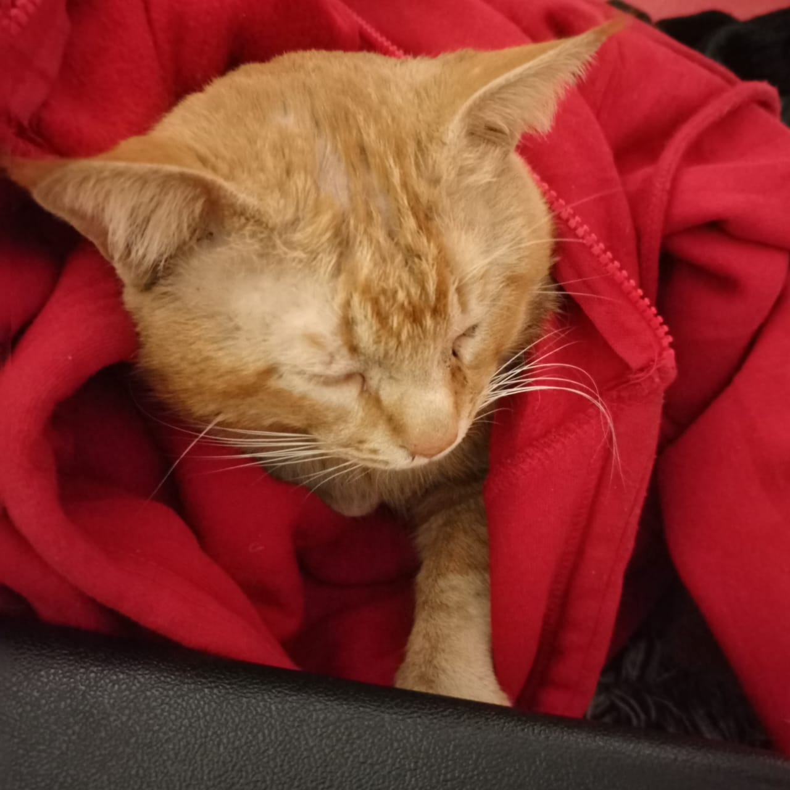
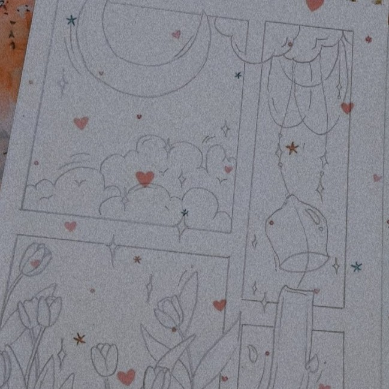
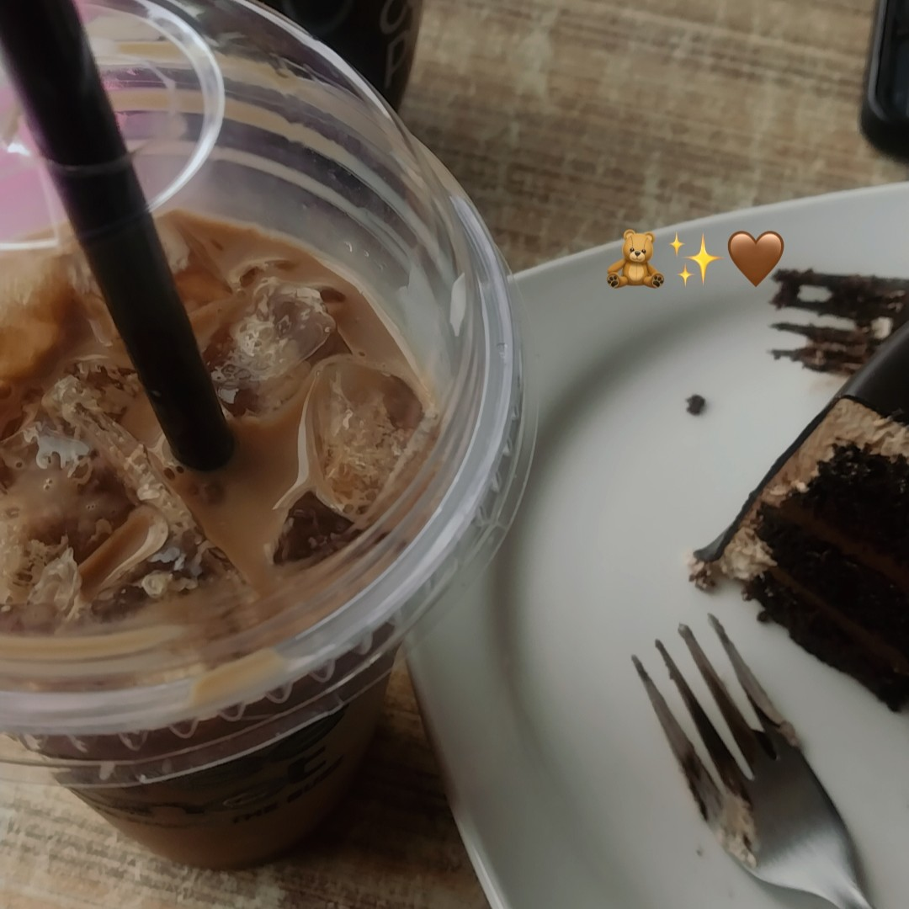

Biography
I am a dedicated Computer Science Lecturer at Fazaia Bilquis College of Education for Women, Nur Khan, and an active Artificial Intelligence Researcher. Having graduated with a Master of Science in AI from FAST NUCES Islamabad, my research focuses on the intersection of healthcare informatics and distributed computing. Specifically, my thesis centered around utilizing Personalized Federated Learning alongside Generative Adversarial Networks (GANs) to identify early-stage neurodegenerative diseases such as Alzheimer's.
In my academic lectures, I enjoy bridging core programming principles with state-of-the-art industry paradigms like Cloud Computing and Machine Learning, striving to empower female engineers to lead in tech.
Education
Master of Science in Artificial Intelligence
Sept 2022 — June 2024Thesis: Early Detection of Alzheimer’s Disease using Personalised Federated Learning and GANs.
My Master's thesis addressed data privacy and distribution issues in medical image analysis, developing a personalized GAN model framework capable of identifying neurological deterioration across decentralized sites.
Masters in Computer Science (MCS)
Sept 2019 — Aug 2021Focused on core software development, algorithm design, programming principles, and database management systems.
Research Interests
- Federated Learning
- Medical Image Processing
- Distributed Systems
- Deep Learning
Selected Courses
Postgraduate (Master's)
Undergraduate / Foundational
Interests & Hobbies
Beyond AI research and lecturing, here are some activities and companions that keep me inspired.

My Pet Simba 🐾
My lovely companion who keeps the workspace lively and brings warmth to busy research days.

Sketching & Art 🎨
Sketching allows me to visually articulate creative designs and provides a peaceful offline escape.

Cafe Hopping ☕
Exploring cozy local aesthetic spots, trying artisanal blends, and reviewing research over fresh coffee.